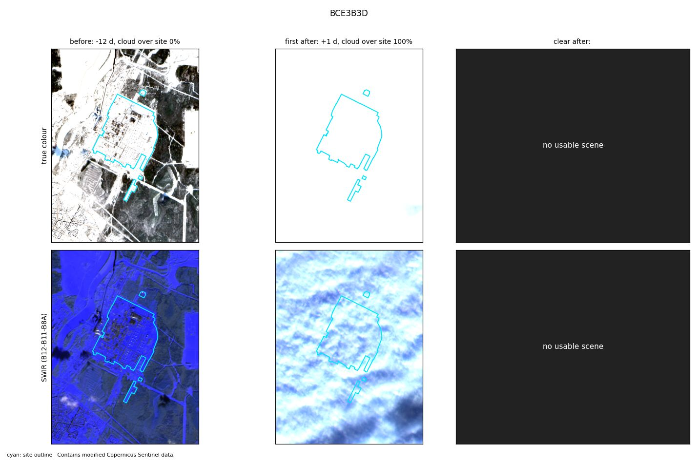
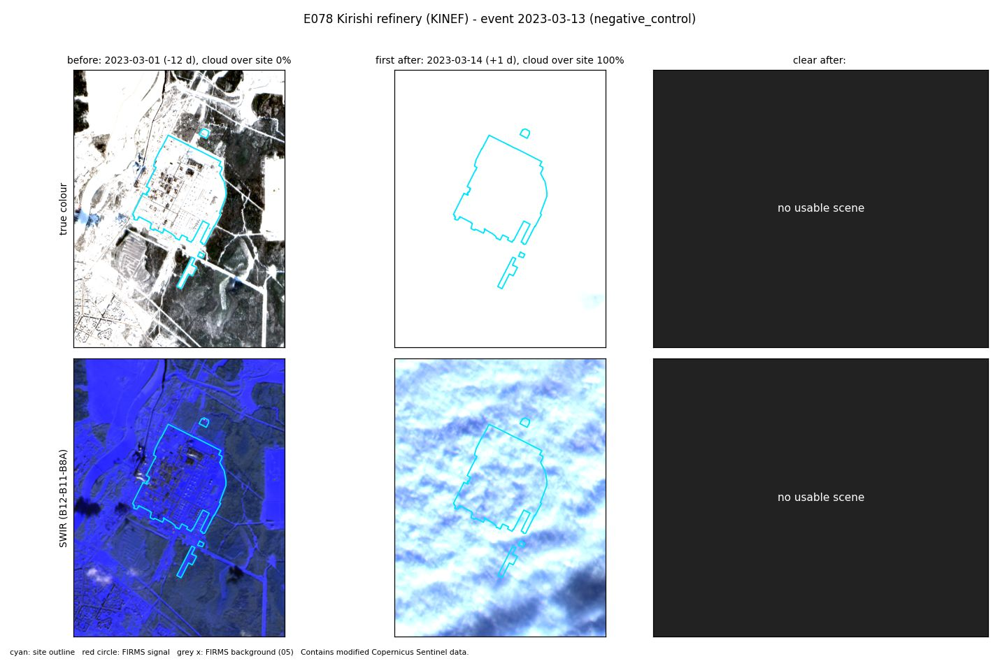

E078 · Control · Calibration half
Kirishi refinery (KINEF)
Control: the same site on an ordinary day, with no known incident. Any corroboration here is a false alarm.
Site level
Not observable
site 100% cloud in the first Sentinel-2 image after; first clear image never
City level
Not corroborated
0 satellite passes with heat within 10 km. Expected: 0.0.
Location
- Site point
- 59.48593, 32.07895
- Basis
- OSM relation/11366279 "Киришинефтеоргсинтез" (reviewed 2026-10-25)
- Uncertainty
- about 3.5 km
- OSM outline
- relation/11366279 "Киришинефтеоргсинтез"
- City point
- Kirishi (GeoNames 548442): 59.4742, 32.0401
- City to site
- 2.7 km
FIRMS heat detections
- Coverage
- VIIRS_SNPP_SP:2023-03-12+5d
VIIRS_NOAA20_SP:2023-03-12+5d
VIIRS_NOAA21_SP:2023-03-12+5d
MODIS_SP:2023-03-12+5d - Gaps
- none
- At the site
- 0 detections in the 5 days around the event. Usual rate: 0.0 per 5 days.
- After the heat filter
- 0 count as fire (0 new, 0 anomalous). 0 usual heat.
City check
- Verdict
- Not corroborated
- Passes with heat
- 0 within 10 km of the city point, inside the time window
- Expected
- 0.0, from the area's own 30-day baseline (p = 1.0)
Sentinel-2
- Status
- No clear image within 30 days after.
- Before
- 1 Mar 2023. Cloud over site 0%.
- First after
- 14 Mar 2023 (+1 d). Cloud over site 100%.
- Blind label
- not assessable, low confidence
Images


Ground truth and sources
control: no event listed for this date in the site-history sources; absence not independently verified - run a +/-3-day news check
Note: refinery flares; same calendar day ~1 year before/after the event